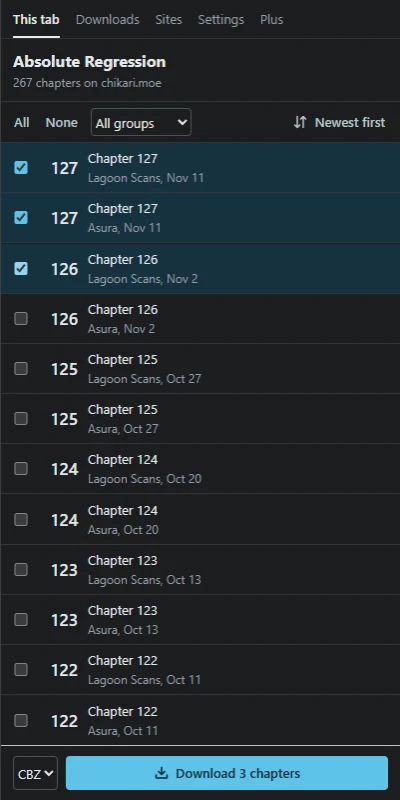
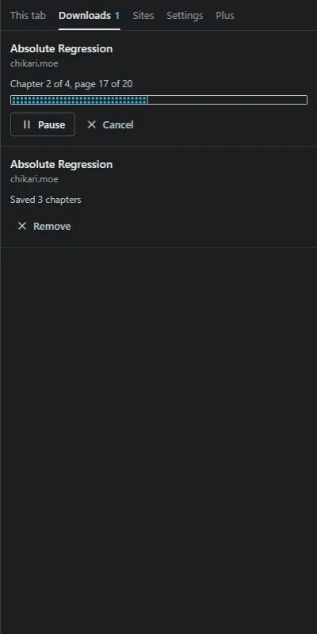
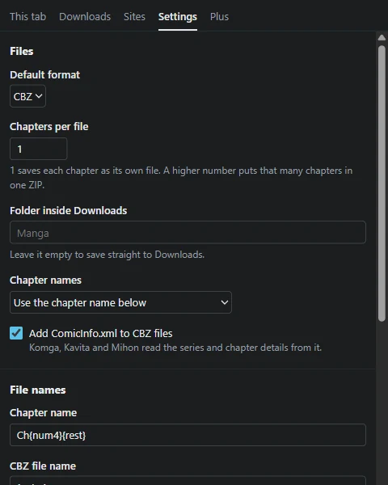

Install
One extension for every Chromium browser and for Firefox. Pin it to the toolbar and click the icon: it opens in the browser’s side panel, or in the sidebar in Firefox.
- ChromeChrome Web Store
- FirefoxFirefox Add-ons, 140 or newer
 EdgeChrome Web Store
EdgeChrome Web Store- Opera and Opera GXChrome Web Store
- Brave and VivaldiChrome Web Store
 LinuxThrough Firefox or Chrome
LinuxThrough Firefox or Chrome- AndroidFirefox, not tested yet
- iPhone and iPadOrion, not tested yet
Chrome, Edge, Brave and Vivaldi
- Open Comics Downloader on the Chrome Web Store.
- Press Add to Chrome (Edge says Get) and confirm.
- Open the puzzle-piece menu and pin Comics Downloader, then click its icon to open the side panel.
- Allow the sites you read.
Firefox
- Open Comics Downloader on Firefox Add-ons. It needs Firefox 140 or newer.
- Press Add to Firefox and confirm.
- Click the toolbar icon to open the sidebar, then allow the sites you read.
Opera and Opera GX
- In Opera, open Comics Downloader on the Chrome Web Store.
- Press Add to Opera. If Opera opens its extension manager, press Install there to finish.
- Pin it from the extensions menu, then allow the sites you read.
Linux
On Linux the extension installs through the browser, exactly as on Windows or macOS. If you still need a browser, pick yours and your distribution for the command, then follow the Chrome or Firefox steps above.
sudo apt update && sudo apt install firefox
Prefer Chromium? Install chromium (Fedora, Arch, openSUSE, Void, Alpine), chromium-browser (older Ubuntu and
Debian) or org.chromium.Chromium from Flathub, then use the Chrome Web Store.
Android
Firefox for Android (142 or newer) can install the add-on from Firefox Add-ons. Phones have no side panel, so only the buttons on the sites’ own pages are there, and version 5 hasn’t been tested on Android yet. Version 4’s Mihon source is not part of version 5. If you have Plus, the web library reads your Cloud Library on any phone.
iPhone and iPad
There is no Safari version. Orion, a free browser by Kagi, installs Chrome and Firefox extensions on iPhone and iPad; version 5 hasn’t been tested there yet, so treat it as an experiment.
- Install Orion Browser from the App Store.
- In Orion, open the ••• menu, then Settings, and turn on Chrome or Firefox extensions.
- Open the Chrome Web Store or Firefox Add-ons page above in Orion and add Comics Downloader.
- In the ••• menu, open Extensions and turn Comics Downloader on.
Coming from version 4
The update installs over version 4. Your settings and your Plus sign-in carry over. Watched series, reading progress, reading stats, the Release Agenda and the right-click menu are gone in version 5; the changelog lists everything that changed.
Allow a site
The extension does nothing on a site until you allow it. Open the Sites tab and press Allow next to
the site, or open a series on the site and press Allow in the panel. The browser asks once; say yes. Some sites ask
for one extra thing: MangaHub needs to read one of its own cookies, and Comix needs its image servers on .site addresses.
Allow all supported sites does them all in one prompt. Allowing a site again after an update can be needed when that site moves its images to a new server; the panel says so.
Which sites work right now, and what each one supports, is on the status page, checked every 30 minutes. Sites marked beta work but may still have rough edges.
Download from the site’s page
On an allowed site, open a series page. Reload it once if you have just allowed the site.
- Download all sits next to the site’s own buttons. It saves every chapter, one version of each when several groups translated it.
- Every chapter gets a checkbox. Tick a few and a bar appears at the bottom: pick the format and press Download. Select all ticks every chapter shown.
- The bar shows the progress while it runs, and Cancel stops it.
Chapters that cost coins on the site are not offered.

Download from the side panel
The This tab view lists the chapters of the series open in the current tab, on every supported site.
- Click a row to pick it. Hold Shift and click another row to pick everything in between.
- All and None pick or clear what is shown; the group menu shows one scanlation group at a time.
- The arrows button flips the order between oldest and newest first.
- Choose CBZ, ZIP or PDF next to the button, then press Download.

Comix
On Comix the extension adds nothing to the page; everything happens in the panel, one chapter at a time. Open the chapter, scroll through it to the last page so the reader loads every image, then press Download this chapter in the panel.
The Downloads tab
Every download is a job in this list, with its progress. You can Pause, Resume or Cancel it, and remove finished ones.
- Jobs run one after another. The list is kept until the browser closes.
- If some chapters failed, Try missed chapters again fetches only those.
- “Waiting for you to pass a browser check” means the site wants to see a real visitor. Open the site in a tab, pass its check, and press Resume. Only that site’s jobs wait; the extension never answers the check for you.
- Messages at the bottom say what went wrong, chapter by chapter.

Settings
- Default format
- CBZ, ZIP or PDF. You can still pick another one for each download.
- Chapters per file
- 1 saves each chapter as its own file. A higher number puts that many chapters in one ZIP, each chapter as its own CBZ, PDF or folder of images inside.
- Folder inside Downloads
- A folder name, such as
Manga. Leave it empty to save straight to Downloads. Each series gets its own folder inside it. - Chapter names
- Either your own name pattern (below), or
Series - Chapter 0012, the layout Kavita and Komga sort best. - Add ComicInfo.xml to CBZ files
- Komga, Kavita and Mihon read the series, chapter number, group and date from it.
- File names
-
Patterns for the chapter name, the CBZ file name and the bundle name. Placeholders:
{manga},{num},{num4}(the number padded to four digits),{label},{group},{language}and{date}. In the CBZ file name,{entry}is the chapter name. - Pace
- Normal, or Gentle, which waits three times longer between requests. Use Gentle if a site starts refusing downloads.
- Retries per image
- How many times a page that failed is asked for again before the chapter counts as missed.
- Theme
- The panel follows the browser, or stays light or dark.
- Notices from the developer
- Short messages from me at the top of the panel, about a site that changed or an update you need. The panel looks for them at most every 6 hours. They’re how I can reach you when something breaks, so I’d keep them on.
The version number is at the bottom of the Settings tab; the status page’s helper asks for it.

Files and reader apps
- CBZ is a ZIP of the page images with a
ComicInfo.xml. Reader apps such as Kavita, Komga, Mihon, Panels and CDisplayEx open it. - ZIP holds the page images only. PDF puts one page image per page.
- Pages keep the quality the site serves; nothing is re-compressed.
- Files go to your Downloads folder, or the folder you set. Their entries are removed from the browser’s download list after saving; the files stay.
Plus
Plus is optional: copying your reading list from one site to another, a Cloud Library for the chapters you download, readable on any device, and your settings on every browser. The library and settings are encrypted in your browser before upload. It costs 1.50 USD a month after a 30-day free trial. More on the Plus page.
- Sign in: open the Plus tab and enter your email. You get a six-digit code by email; there is no password. If the address has no account yet, signing in creates one.
- Cloud Library: in This tab, set Save to to Cloud Library, or Computer and Cloud to keep the file on disk too. Each chapter is encrypted and uploaded after it downloads. Downloads started from the site’s own page go to your computer only. Read them at the web library.
- Settings sync: turn on Sync settings with my other browsers. Changes upload a few seconds after you make them, and other browsers pick them up when they start, or when you press Sync now. Restore points put your settings back as they were on an earlier day.
- Copy reading lists: under Copy reading lists, pick where to copy from (a site, a MyAnimeList export file, or your v4 watched list) and where to copy to. Sign in on both sites in this browser first. You choose which statuses to copy, check every series matched by title only, and pick by hand the ones it can't find. A copy only adds series; nothing already on your list changes. For Comix, it saves a file you load on Comix's import page with Merge.
- Signed-in browsers lists your browsers; remove any you don’t recognise. The account page has billing, devices and account deletion too.
- “This browser can’t read your cloud data yet” appears on accounts whose encryption key was made before September 2026 and is only on the browser that set up Plus. Open Comics Downloader there once and the key reaches the service; then press Check again. If that browser is gone, start over deletes the cloud data nothing can read any more and makes a new key.
What Plus stores and why is in the privacy policy; the terms and refund policy cover billing.

Troubleshooting and questions
The status page shows whether a site itself is working right now. Its helper walks through these fixes, can put you in touch with me when I’m online, and writes a report you can file on GitHub.
There are no buttons on the site
Check that the site is allowed in the Sites tab, then reload the series page. Buttons appear on series pages, not on the home page or inside the reader. If a site changed its pages and the buttons are gone, the panel’s This tab view still lists the chapters.
The site keeps asking for a browser check
The extension never answers a check for you. When a site asks for one, only that site’s downloads pause. Pass the check in a normal tab of the site, then press Resume in the Downloads tab. If it keeps coming back, set Pace to Gentle in Settings, wait a few minutes, and turn off a VPN or blocker that may interfere with the check.
Downloads fail with 403 or 429
The site is refusing requests for a while, usually because it saw too many in a short time. Set Pace to Gentle, wait about ten minutes, then press Try missed chapters again. Another downloader or reader app on the same connection counts toward the same limit.
A download stopped partway
Closing the browser ends the queue; it isn’t kept after a restart. Open the series again, pick the chapters that are missing and download them. Within one session, Try missed chapters again fetches only the ones that failed.
It says “The save was cancelled”
The browser’s save window was closed without saving. If it asks where to save every file, turn off “Ask where to save each file before downloading” in the browser’s download settings.
It says “This version can’t reach” an image server
The site moved its images to a new server. Update the extension, then allow the site again in the Sites tab.
A file won’t open, or pages are missing
Download the chapter again. If a CBZ won’t open, try the same chapter as ZIP: if the ZIP opens, the reader app is the problem. Pages are saved exactly as the site serves them.
Where do my files end up?
In your Downloads folder, inside the folder set in Settings, with one folder per series. Each chapter is its own CBZ, ZIP or PDF, or several chapters share one ZIP if Chapters per file is above 1. The entries are removed from the browser’s download list after saving; the files stay.
Can I change how files are named and packed?
Yes, in the Settings tab: the format, chapters per file, the folder, Kavita and Komga naming, your own name patterns, and whether CBZ files get ComicInfo.xml.
Does it open tabs while downloading?
No. Version 4 opened background tabs on Comix; version 5 fetches everything itself. On Comix it reads the chapter you already have open, so scroll through it to the end before pressing Download.
Why isn’t my site supported?
The status page lists every site that was looked at and why the others are left out: some already let readers download, some sell chapters with copy protection, and some sit behind checks the extension won’t get around.
Is it free?
Yes. Everything on this page except the Plus section is free. Plus is optional, 1.50 USD a month after a 30-day trial, and pays for the Cloud Library and settings sync.